About Me
Hello! I am Anup Pudasaini, an agriculture graduate from Tribhuvan University, IAAS Lamjung Campus. I am passionate about sustainable agriculture, integrating technology, and empowering communities to modernize farming practices in Nepal.
Professional Journey
- Former President: Youth Thinkers' Society - Lamjung (2023-2024)
- Program Coordinator: Agri Mappers - Lamjung Chapter (2020-2023)
- Organizer of Model United Nations (MUN), fostering leadership among youth.
Research & Academic Highlights
Academic Studies
- Xavier International College: Science (2017-2019)
- Tribhuvan University: Bachelor's in Agriculture (2020-2024)
Research Projects
- Soil Management: AMF and phosphorus integration to improve potato cultivation (funded by NAST).
Key Initiatives
- Suicide Awareness Training: In collaboration with KOSHISH Nepal.
- Agri Talk Series: Panel discussions with farmers and stakeholders.
- School MUN: Leadership training for children through UN simulations.
- Collaborated with FAO Nepal and the US Embassy on various agricultural and community projects.
- Organized Lamjung MUN 2024, bringing together young leaders to discuss global issues.
- Volunteer at Research Symposium, contributing to the dissemination of research findings.
Gallery
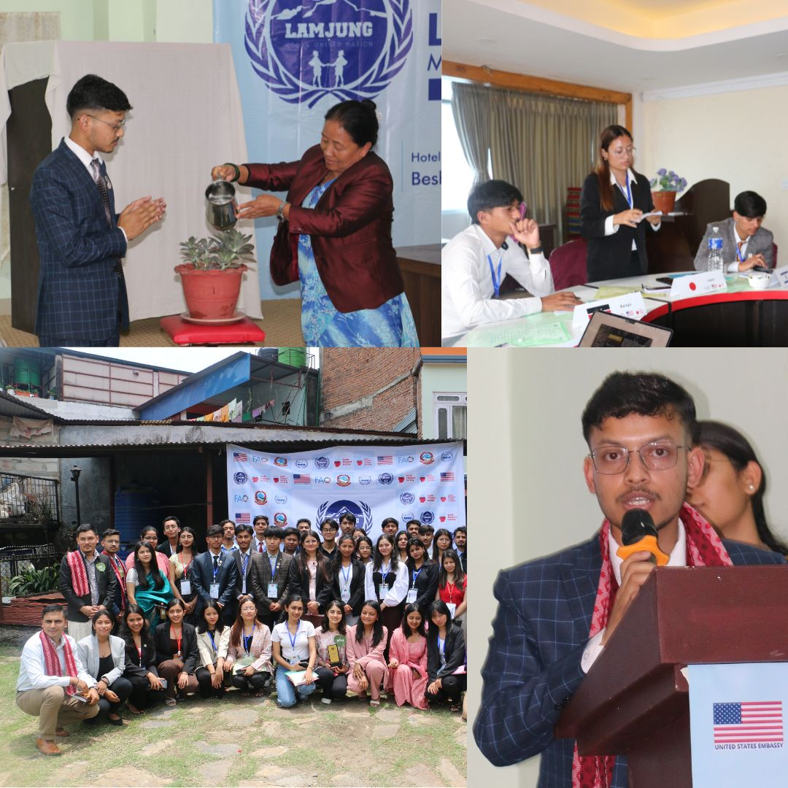
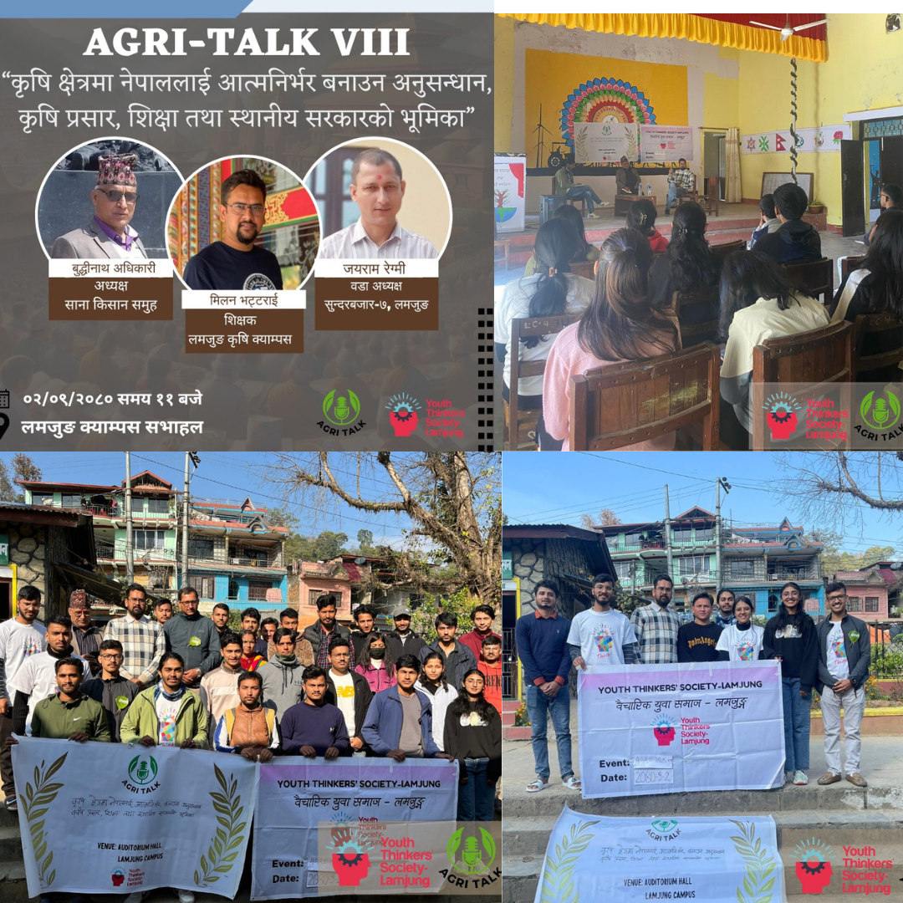
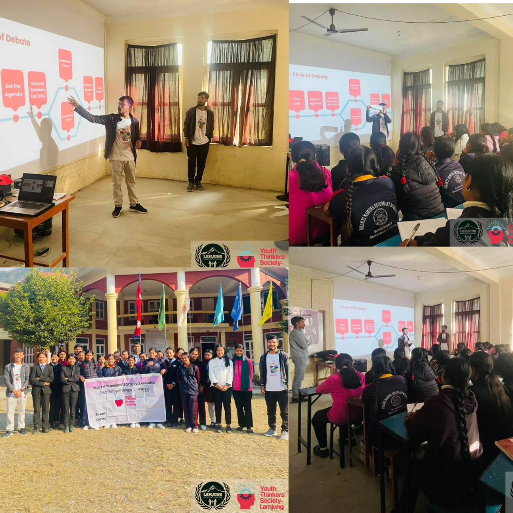
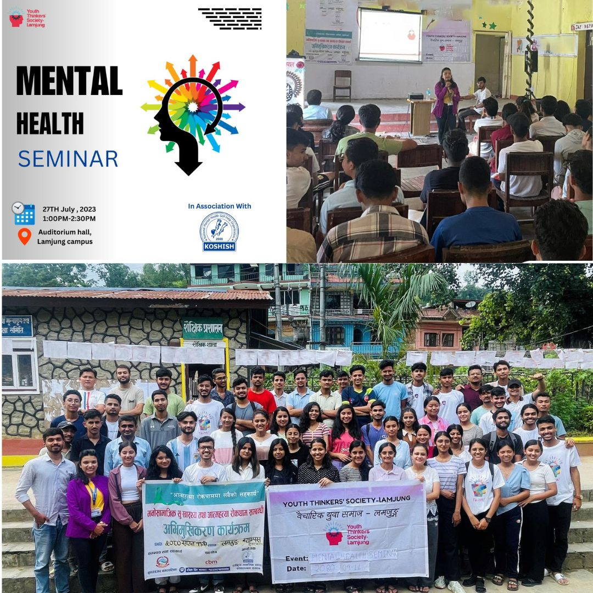
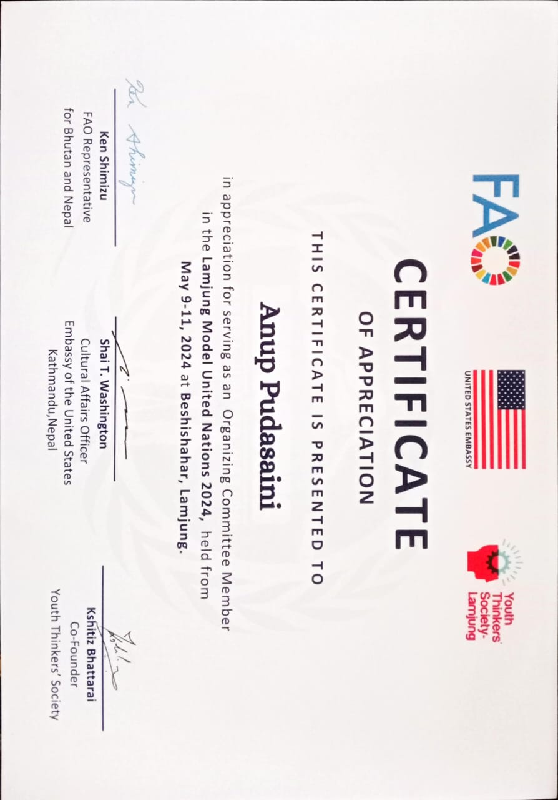
 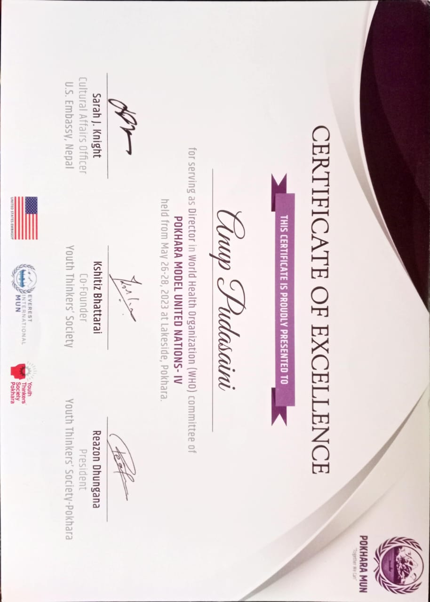
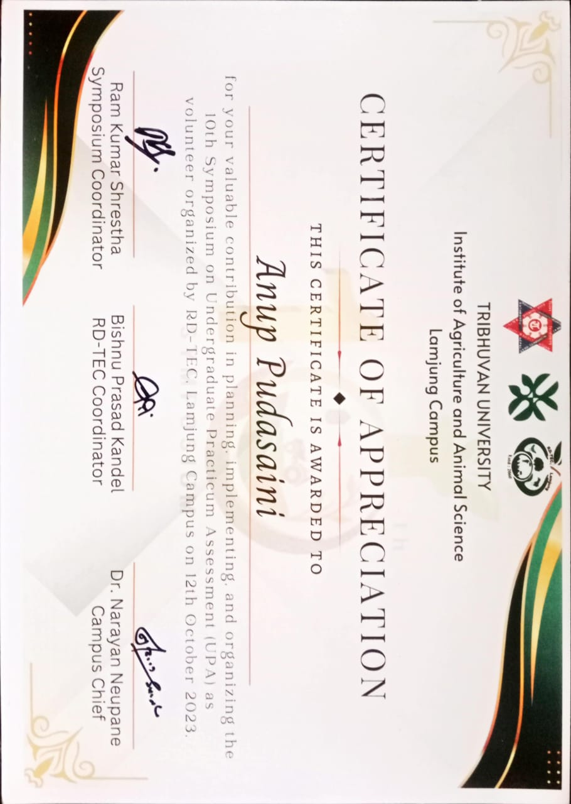
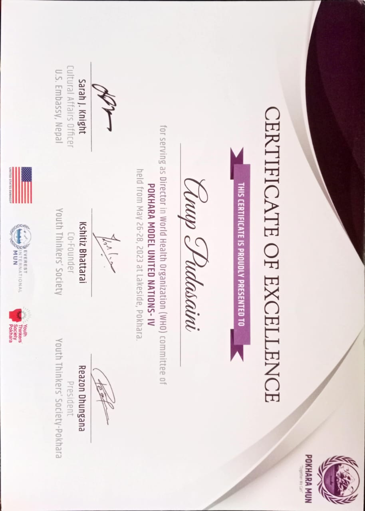
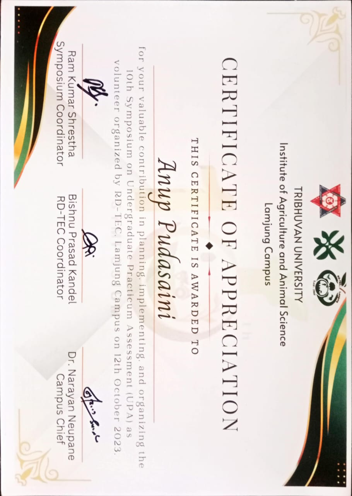
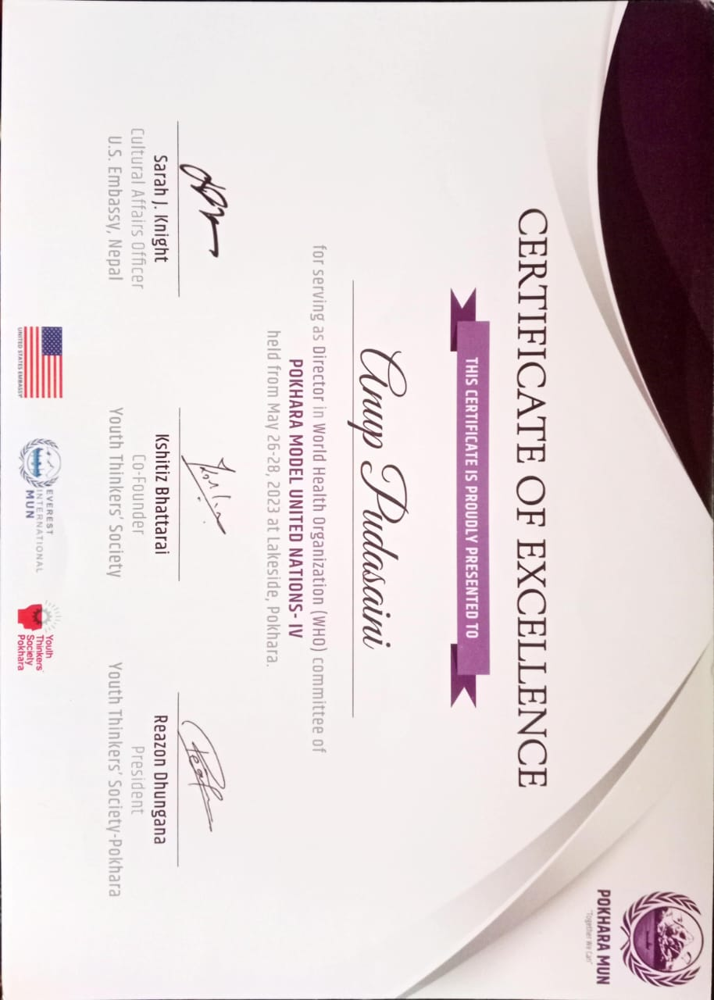
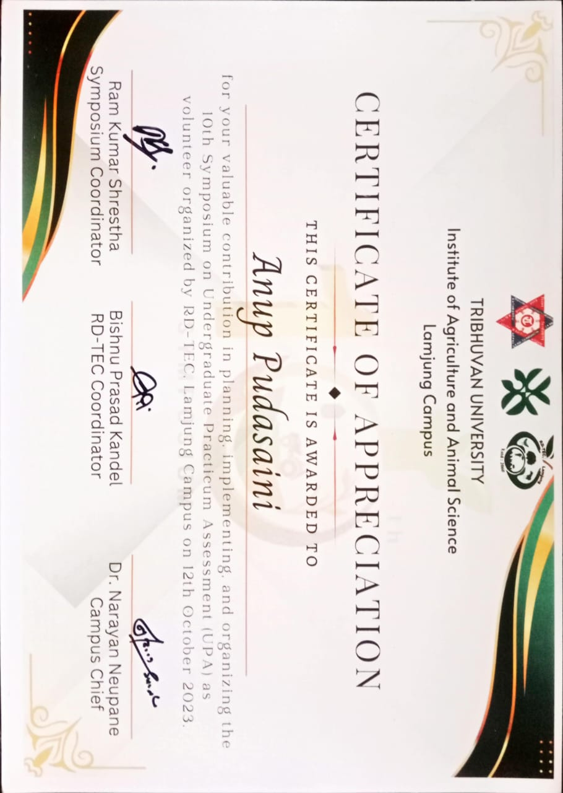